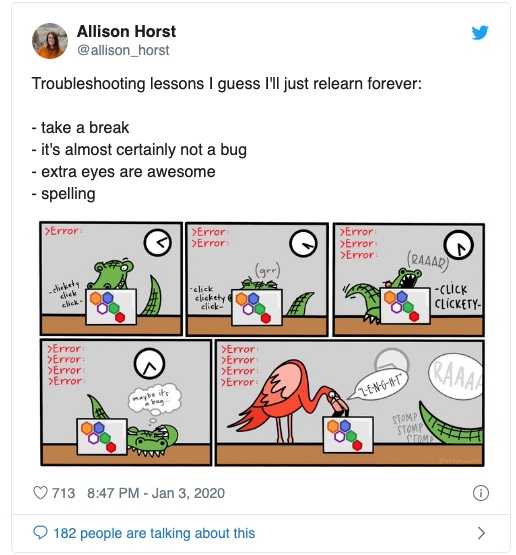

top100 <-
read_csv("https://github.com/utdata/rwd-billboard-data/blob/main/data-out/hot100_archive.csv?raw=true")16 Getting and saving data
In this chapter
- Invoking standard packages
- Reading data from from Excel or from a text file.
- Looking at your data
- Introducing the “pipe” (%>%)
- A postscript on different types of data files
testing a video embed off of media plus:
But before we start:

The data frame
A data frame is an R variable1 and can be used and re-used like any other. The difference is that it contains columns and rows, just like a spreadsheet. These follow the rules we’ve seen about good, tidy Excel files:
- Each column contains one kind of information – race, sex, address, etc.
- Each row contains one example of each of those columns, all at the same unit of analysis. In other words, they each refer to the same noun.
Before you can use a data frame, you will have to import some data from a file on your hard drive or the web, or load some data that is saved in one of several R-specific formats. Most of the time, your data will originally come in a comma-separated text file (.csv), or in an Excel format (.xlsx). As you work on it, you’ll save it as an R data file that you’ve checked for mistakes and proper treatment of columns.
Example data
Christian McDonald, a data journalism professor at the University of Texas, has compiled a list of Billboard’s Hot 100 hits back to the 1950s, and made it available in his Github account. It’s a great example dataset because it has a lot of rows, a few columns, and few different data types. It’s also easy to understand. He has also made some tutorials using this data, and has generously offered it up for our use.
We’ll be using the data on McDonald’s Github repository at https://github.com/utdata/rwdir/blob/main/data-raw/hot100_archive.csv?raw=true
Here is how he describes it:
The Billboard Hot 100 singles charts has been the music industry’s standard record chart since its inception on 8/2/1958. The rankings, published by Billboard Media, are currently based on sales (physical and digital), radio play, and online streaming. The methods and policies of the chart have changed over time.
The data we will use here is a combination of data collected by Kaggle user Dhruvil Dave, along with some scraping and merging by Prof. McDonald. It is stored on the code sharing website Github for safe keeping.
Here is a data dictionary , sometimes called a record layout to go along with the data. You should look for, or create, something like this for every data source you use.
| variable name | type | description |
|---|---|---|
| CHART WEEK | date | The release date of the chart |
| THIS WEEK | number | The rank (1 through 100) of the song that week |
| TITLE | character | Song title |
| PERFORMER | character | Performer, as published in the chart. There could be different spellings over time. |
| LAST WEEK | number | Last week’s ranking |
| PEAK POS. | number | Highest ranking ever on the Top 100 chart |
| WKS ON CHART | number | Number of weeks it has appeared on the chart, not necessarily consecutive. |
It’s a good example for us, since there are no nuances to the data, and it contains a mix of words, numbers and dates. You won’t have to spend a lot of time studying it to understand what it is.
Notice the upper-casing, the spaces and the period in the column names. This will be important later on.
Starting a new R program
Every time you start a new R markdown document, you will need to load any packages you intend to use by editing the first code chunk in the default document, called the “setup chunk”.
Then you will delete all of the boilerplate below the first code chunk.
If you are following along, it is assumed that you have created or opened a project to hold your new programs and data. Do that now if you haven’t. Mine is in my project called cohen-rlessons, inside my class folder.)
Create a new markdown document (the green plus sign at the upper left of your screen, or in the File menu) , and edit the setup chunk as shown below. If you want, copy and paste the YAML from the last lesson and replace the default options with that.
Save your document as 01-top100.Rmd . I’m using the “01” prefix so that when I come back to this six months down the road, I know that this program has to be run first!

I’ve created a template you can save in your project for this exercise , but I encourage you to use it as a guide rather than to copy-paste or just edit it. You should get in the habit of creating readable markdowns that document the how, what, why and where of your work.
Importing the Hot 100 data file
When you read in a CSV2 file, R will guess what each column is – text (words, called “character” or “chr” in R), numbers (“dbl” or “int” for “double-precision” or “integer”), and date/time (which have a couple of different possibilities that we’ll get into later on). 3
Data frames are most easily managed by keeping a few style rules in mind:
- Column names should be all lower-case, and have no special characters. Separate words in a column name with an underscore.
- Any column containing numerals that you don’t plan to use in a math computation should be stored as a character type, not a number.4
We often have to tweak the data import to make sure of these things, or have to convert data types once they ’ve been imported. If you then save your data as an R data frame, you never have to do that again.
Create a new code chunk to read the top 100 dataset into a variable like this:
Here’s what that code does:
- Creates a new variable name, called top100, to pour the data into.
- Uses a function of the tidyverse5 called
read_csv, to - Access comma-separated text data held in McDonald’s github repository.
When you run the chunk by pressing the green arrow within the code chunk, or press Shift-CMD-Enter , the output should look like this:
Rows: 330800 Columns: 7
── Column specification ────────────────────────────────────────────────────────
Delimiter: ","
chr (3): CHART WEEK, TITLE, PERFORMER
dbl (4): THIS WEEK, LAST WEEK, PEAK POS., WKS ON CHART
ℹ Use `spec()` to retrieve the full column specification for this data.
ℹ Specify the column types or set `show_col_types = FALSE` to quiet this message.So R found:
- 330,787 rows (or records, or observations).
- Seven columns ,
- Three of which it thinks are character types, and four that it thinks should be numbers.
- It named the variables using the first row of the file.
Pro tip: if you’re not sure about the data types of each column, use an option to import them all as text, or character, columns. Then you can fix them one by one. Text will (almost) never be a problem. The option looks like this:
read_csv( name_of_file, col_types=c(.default="c") )
It’s also telling you how to get more information. Sometimes, this will say “Use problems() …”, meaning that something could have gone wrong and you should check it. We’ll see how to fix the column types at the same time as your import later on in the course.
If you want to import an Excel file, you have to use a slightly different library. You will have to load the readxl library in the setup chunk, then use the read_excel() function to access the data. It works similarly, but it’s a slightly different method.
There are a few ways to look at the data. First, you can look at the top and bottom of it using the head() and tail() commands:
head(top100)# A tibble: 6 × 7
`CHART WEEK` `THIS WEEK` TITLE PERFORMER LAST …¹ PEAK …² WKS O…³
<chr> <dbl> <chr> <chr> <dbl> <dbl> <dbl>
1 8/4/1958 1 Poor Little Fool Ricky Nels… NA 1 1
2 8/4/1958 2 Patricia Perez Prad… NA 2 1
3 8/4/1958 3 Splish Splash Bobby Darin NA 3 1
4 8/4/1958 4 Hard Headed Woman Elvis Pres… NA 4 1
5 8/4/1958 5 When Kalin Twins NA 5 1
6 8/4/1958 6 Rebel-'rouser Duane Eddy… NA 6 1
# … with abbreviated variable names ¹`LAST WEEK`, ²`PEAK POS.`, ³`WKS ON CHART`Or, you can look at a list of columns along with their types and a few examples from the top of the file using the glimpse() function, in this case listing the name of the data frame you want it to look at within the parentheses.^ [You may have noticed a pattern already: Function names are followed by parentheses, which leave room specifications, called arguments. Sometimes you don’t need any, so they’re blank]
glimpse(top100)Rows: 330,800
Columns: 7
$ `CHART WEEK` <chr> "8/4/1958", "8/4/1958", "8/4/1958", "8/4/1958", "8/4/19…
$ `THIS WEEK` <dbl> 1, 2, 3, 4, 5, 6, 7, 8, 9, 10, 11, 12, 13, 14, 15, 16, …
$ TITLE <chr> "Poor Little Fool", "Patricia", "Splish Splash", "Hard …
$ PERFORMER <chr> "Ricky Nelson", "Perez Prado And His Orchestra", "Bobby…
$ `LAST WEEK` <dbl> NA, NA, NA, NA, NA, NA, NA, NA, NA, NA, NA, NA, NA, NA,…
$ `PEAK POS.` <dbl> 1, 2, 3, 4, 5, 6, 7, 8, 9, 10, 11, 12, 13, 14, 15, 16, …
$ `WKS ON CHART` <dbl> 1, 1, 1, 1, 1, 1, 1, 1, 1, 1, 1, 1, 1, 1, 1, 1, 1, 1, 1…Here, you might notice that the names of some of the columns have back-ticks around them. That’s because they don’t follow our rules for column names – they should be lower case, with no spaces or special characters.
You can also explore a dataset by clicking on its name in the Environment tab. This is a good idea for exploring, but it can’t be replicated by your audience. It suffers from the same point-and-click problems that you ran into using spreadsheets. If you plan to use any of the results of that exploration, you’ll have to explicitly program them in the markdown.
Introducing the pipe
You’ll be seeing a lot of R code that has this format:
data_set_name %>%
verb ( nouns ) %>%
verb ( nouns ) %>%
etc...That little symbol, %>% is called the “pipe”. It means “and then keep going to the next command”. It matches the way you think about algorithms from the programming appendix in this book.


We’re going to use two of the other libraries that we loaded at the top – lubridate and janitor to fix the two problems with this data, while showing you what the pipe does.
Add a code chunk that you’ll edit to clean the column names and types now.
I try to build my code chunks one step at a time. These will show up as separate ones, but in practice I keep editing one that works until I get what I want.
Using a pipe can help make your code easier to read and write by separating each step into its own command. For example, glimpse(top100) does the same thing as top100 %>% glimpse(). The second version tells R, “Start with the top100 data frame and then glimpse it. Using small-ish datasets like this, I try to separate as much as is reasonable into separate steps because I can then troubleshoot problems one line at a time.
top100 %>%
clean_names() %>%
glimpse()Rows: 330,800
Columns: 7
$ chart_week <chr> "8/4/1958", "8/4/1958", "8/4/1958", "8/4/1958", "8/4/1958…
$ this_week <dbl> 1, 2, 3, 4, 5, 6, 7, 8, 9, 10, 11, 12, 13, 14, 15, 16, 17…
$ title <chr> "Poor Little Fool", "Patricia", "Splish Splash", "Hard He…
$ performer <chr> "Ricky Nelson", "Perez Prado And His Orchestra", "Bobby D…
$ last_week <dbl> NA, NA, NA, NA, NA, NA, NA, NA, NA, NA, NA, NA, NA, NA, N…
$ peak_pos <dbl> 1, 2, 3, 4, 5, 6, 7, 8, 9, 10, 11, 12, 13, 14, 15, 16, 17…
$ wks_on_chart <dbl> 1, 1, 1, 1, 1, 1, 1, 1, 1, 1, 1, 1, 1, 1, 1, 1, 1, 1, 1, …This shows us that the function clean_names() converts the column names into our preferred style. Notice that we didn’t pour that answer into a new variable name, so it just prints the answer to the screen.
Once this works as expected, we can finish cleaning up the data.
This process uses the pipe to tack on new statements after each one is complete, and introduces the verbs of the tidyverse, which you’ll see in action in the next chapter.
These are two of the most important verbs you’ll use:
select, which picks and rearranges columns (kind of like filtering vertically)mutate, which lets you create new columns out of old ones. (like inserting a column in Excel and entering a formula)
The code chunk also uses function called mdy(), which stands for “month-day-year”, which in turn tells R that the character chart_week column starts out in that format, as opposed to year-month-day or something else.6
Your final code chunk should look like this. Try to avoid copying and pasting, and instead build it one step at a time, running the chunk each time you add a phrase.
(I usually add the variable name at the top last to save the data result for later use, after I’m sure everything has worked by printing it to the screen.)
top100_clean <-
top100 %>%
clean_names () %>%
mutate ( chart_date = mdy(chart_week)) %>%
select ( chart_date, title, performer, this_week, last_week,
wks_on_chart, peak_pos)Save your cleaned data in the tidyverse’s rds format in a code chunk like this:
saveRDS(top100_clean, file="hit100.RDS")
What we did
- Created a new R Markdown document and added the packages (libraries) we plan to use.
- Imported a comma-separated text file from the web into a data frame called it
top100. - Took a look at it in several different ways.
- Created a second data frame from the first, with names and dates fixed, with only some columns picked out and displayed in a new order.
- Saved it into the project for use in another program.
What you should do next
If you’ve followed along, you should create text surrounding your code chunks that result in a clean, readable Markdown document that readers can follow from start to finish. Include:
- Documentation of the source of your file.
- Sub-headings for each of the steps
- Introductory text describing what you are about to do
- Maybe: Some text after the chunks that describe meaningful output.
If you’re stuck, you can use the template I created as a starting point.
Knit it early and often to make sure your program isn’t broken and that the output looks the way you expect.
And breathe
You’ve now created a full, working R program in Markdown format that can serve as a model for everything you do in the future. Congratulate yourself and take a break!

Postscript: Understanding file types
So far in this book, you’ve been saved from having to understand the format of data as it is traded among people and computers. Now you’ll have to start understanding that there are different forms of data files, one of which is the simple Excel file that we’ve dealt with so far.
But Excel is a propriety format – it’s made by Microsoft and isn’t very easy to use without a program that can import it. As we’ve seen, it can also corrupt data by misunderstanding data types like dates and numbers, and there isn’t much control over its assumptions.
This section will go over the common data formats you’re likey to run across in your work with R. However, R is not limited to these. You’ll often find arcane and specialized data file formats if you work with statisticians or experts in geographic analysis that can also be read in R. There is almost always a package available that will import it.
Tabular text data
In Excel and Google Sheets, each page of a workbook is tabular, meaning it is approximately a rectangle. It might be a narrow and tall rectangle, or a short and wide rectangle, but it’s still a rectangle. Each column is an attribute or a variable, and each row is an observation or a record .
Every computer can read and write plain text. Those are the characters you can type on a typewriter, with no fancy formatting or other features that require special software to ingest it. We’ll normally be dealing with these. They usually come in two flavors:
CSV data is “comma-separated values” data, which means that a new column will be created whenver a comma is encountered. If there is a chance that there might be a comma inside a column, it will be enclosed by quote marks. This usually works OK, but there are some times when you have to be careful because there could be commas AND quotes inside a column. (A good example is a column of peoples’ names – they may be something like
Smith, Johnny "The Rat") To overcome this, some people use:TSV , or tab-separated data. In this case, the tab key determines the distinction between columns, which is much rarer to find in plain text files.
Here’s what a CSV might look like listing the last few presidents:
name, position, start_date, age_at_start_date
"Biden, Joe", President, 2021-01-20, 78
"Trump, Donald", President, 2017-01-20, 70
"Obama, Barack", President, 2009-01-20, 47It looks like a mess to you, but it’s a thing of beauty to a computer.
Some government agencies just make up a delimiter instead of a comma or tab - I’ve seen them with vertical bars (|) and tildes ~. You would use the function read_delim() to import a text file delimited by something other than a comma.
Non-tabular text data
Another common format you’ll see passed around from computer to computer is called JSON. This stands for Javascript Object Notation, and is commonly used to pass data over the web , often to your phone or your browser.
It looks even worse, but it’s also a thing of beauty to a computer. The same data would look like this in JSON:
{"presidents": [
{"name": "Biden, Joe", "position": "President", "start_date": "2021-01-20",
"age_at start_date": "78"},
{"name": "Trump, Donald", "position": "President", "start_date": "2017-01-20",
"age_at start_date": "70"},
{"name": "Obama, Barack", "position": "President", "start_date": "2009-01-20",
"age_at start_date": "47"}
]
}
Data formats created for specific software
R has its own data files, sort of like Excel files, which require no special handling when used within R, but can’t really be used in any other program.
Almost every programming language has a way to read Excel (.xlsx) files, but they sometimes don’t handle intricacies very well.
For now, we’ll just work with these kinds of files, but just remember that you’re likely to run into all different kinds. Get some help before just Googling when you find a new type – you’ll often get bad advice from the internet on this topic.
A variable in R is just a name of something. We’ll sometimes also use the word to refer to a column in a dataset, which is a statistician’s definition of a variable.↩︎
comma-separated text values. See below for a brief description of file types.↩︎
You might see them called “Date” (without a time) or POSIX (with time). Most POSIX date-time variables store the number of seconds since Jan. 1, 1970, with negative numbers prior to that. You’ll never work with them directly.↩︎
More advanced users create a special type of variable called a
factorto work with categories - we’re skipping that for now.↩︎Actually, a package within the tidyverse called
readr↩︎This function is part of the library called
lubridatethat we also loaded in the setup chunk.↩︎